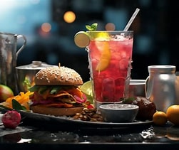
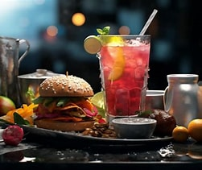
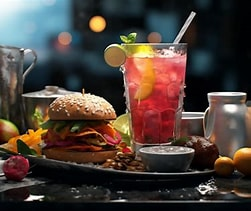

Kota Kings & Burger Queens is a proudly South African fast-food startup offering authentic township-style kotas and flame-grilled burgers. Based in Polokwane, the business caters to urban and township communities with a focus on affordability, generous portions, and bold local flavour. We aim to grow into a national brand while maintaining our township roots.

The proposed website will serve as the digital home for the brand. Its primary goals are to:
Increase brand visibility and online presence.
Enable customers to view menus, place orders online, and locate nearby branches.
Improve customer engagement via newsletters, contact forms, and social media links.
Support marketing campaigns and promotions.
Showcase the brand story and vision to investors, customers, and potential franchisees.
Current Website Analysis
Currently, Kota Kings & Burger Queens only uses social media and in-person sales instead of having its own website. This limits the company's reach, especially when it comes to delivery and brand promotion. Lack of a website also limits growth for national marketing and SEO customers.
History
Kota Kings & Burger Queens started with a simple idea to bring together two South African favorites: the classic kota and the ever-popular burger. Founded in Polokwane in 2024, the business was born out of the passion to mix tradition with modern fast food culture. What began as a small street-food concept quickly gained attention for its creative twist on local flavors, turning an everyday meal into a unique dining experience. Over time, the business has grown into a brand that represents community, innovation, and the love of good food.

 
